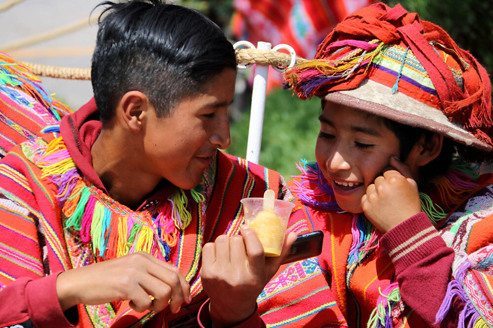
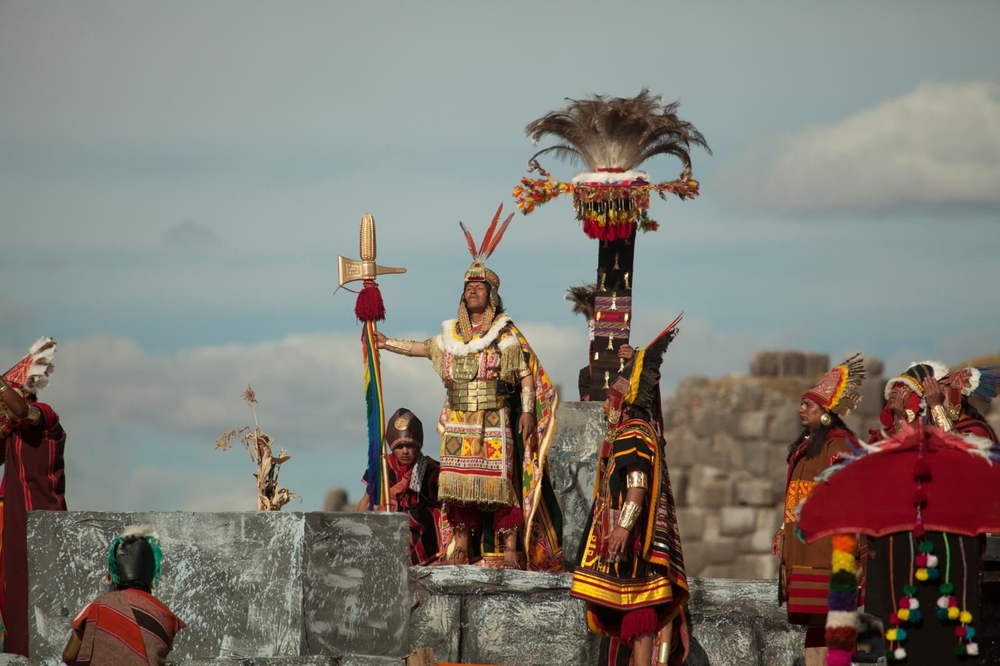
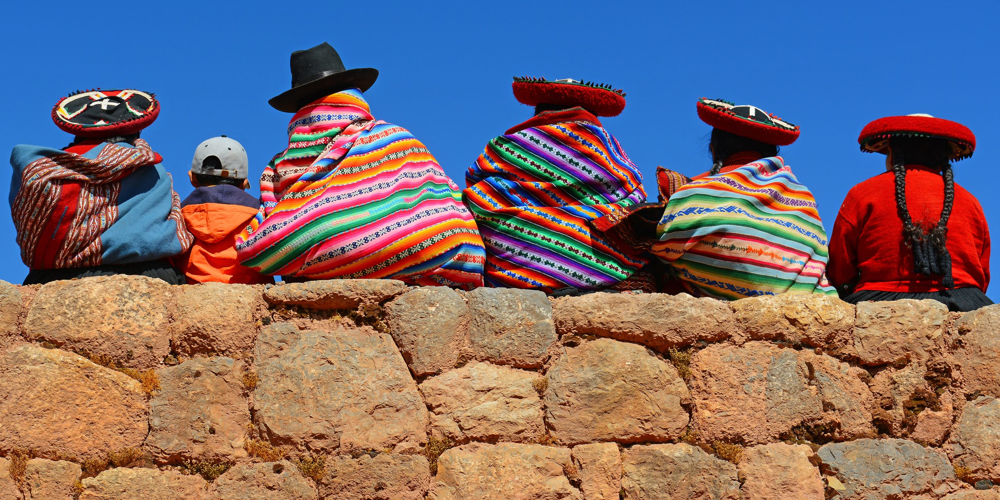
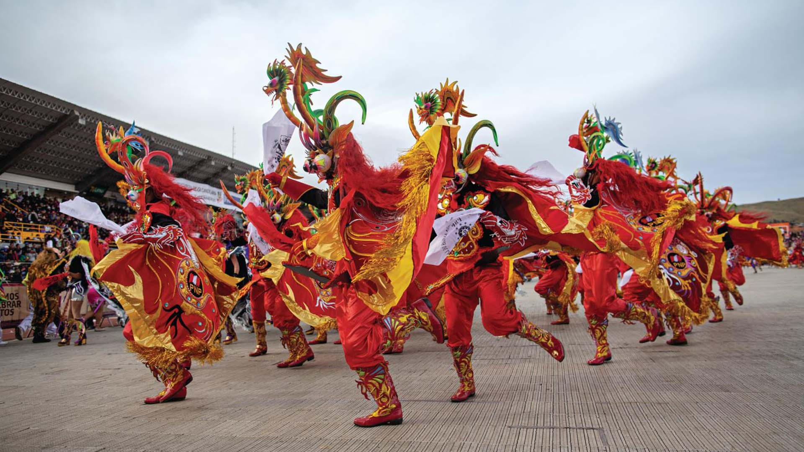

Colori, ritmi e antichi rituali: L’anima culturale del Perù
Lingue
La lingua ufficiale è lo spagnolo, parlato dal 70% della popolazione; recentemente è stata
ufficializzata la lingua quechua, uno dei più diffusi idiomi locali insieme all'aymará, parlato
soprattutto nel sud del paese. I gruppi dei quechua e degli aymará popolano le regioni andine;
molti di loro non parlano lo spagnolo e hanno conservato gli usi e costumi dei loro antenati.
Lungo la fascia costiera e nelle città degli altipiani, bianchi, meticci e neri seguono, in gran parte,
uno stile di vita occidentale. Infine, l'esigua minoranza di indios amazzonici vive in base a
usanze tribali e in condizioni di completo isolamento.

Festività
Le festività peruviane sono tra le più spettacolari dell’America Latina: un intreccio di spiritualità andina, eredità inca e tradizioni portate dai conquistadores spagnoli. Ogni celebrazione è un’esplosione di musica, danze, costumi e riti che raccontano la storia profonda del Paese.
Tra le più importanti spicca l’Inti Raymi, l’antica Festa del Sole, celebrata a Cusco ogni 24 giugno. È una rievocazione solenne dei riti inca dedicati a Inti, il dio solare, con processioni, costumi cerimoniali e un’atmosfera quasi mistica.
Un’altra festa iconica è la Fiesta de la Virgen de la Candelaria a Puno, patrimonio UNESCO: ogni 2 Febbraio migliaia di ballerini e musicisti riempiono le strade con coreografie spettacolari, maschere elaborate e ritmi travolgenti.
Molto sentita anche la Settimana Santa di Ayacucho, famosa per le sue processioni notturne illuminate da migliaia di candele, che uniscono spiritualità cattolica e simboli indigeni.

Usanze
Le usanze peruviane riflettono un rapporto profondo con la natura, la famiglia e la comunità.
Al centro della vita andina c’è la Pachamama, la Madre Terra, venerata attraverso piccoli rituali quotidiani: offerte di foglie di coca, fiori, mais o chicha per chiedere protezione e fertilità.
Un’usanza molto diffusa è l’Ayni, il principio di aiuto reciproco: i membri della comunità collaborano nei lavori agricoli, nelle costruzioni e nelle attività quotidiane, mantenendo un forte senso di solidarietà.
Molte famiglie conservano ancora l’abitudine di indossare abiti tradizionali, come i poncho e le polleras, che cambiano colore e decorazioni a seconda della regione.

Folclore
Il folclore peruviano è un mosaico di culture: quechua, aymara, afro-peruviana e spagnola.
Ogni danza, ogni melodia e ogni leggenda è un frammento della storia del Paese.
Tra le danze più celebri troviamo la Marinera, elegante e romantica, simbolo nazionale; la Danza de las Tijeras, spettacolare e acrobatica, nata nelle comunità andine; e la Huayno, una danza popolare accompagnata da arpa e charango.
Il folclore è ricco anche di miti e figure leggendarie:
El Ekeko, spirito portafortuna della prosperità
La Sirena del Titicaca, creatura magica che abita il lago
El Supay, spirito delle miniere, protagonista di molte danze rituali
Questi racconti, tramandati oralmente, mantengono vivo il legame con le radici ancestrali.
